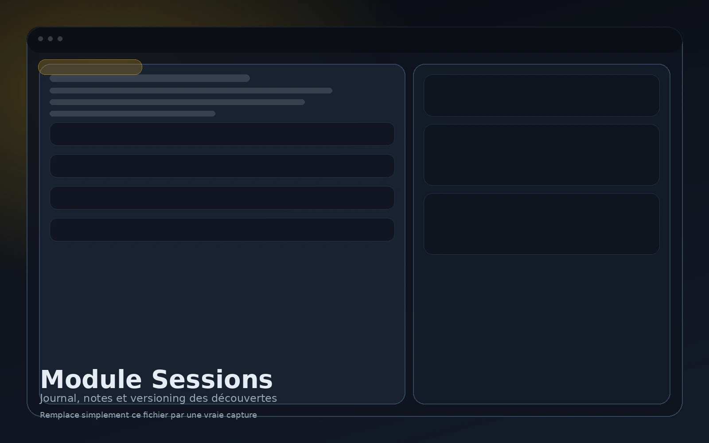

Créer une session
Chaque session représente un état précis de la campagne et sert de repère chronologique stable.
Le module Sessions est le point d’entrée chronologique de la campagne. Il permet de prendre des notes à chaud, puis de redistribuer proprement l’information dans des entités liées à la progression réelle du groupe.
C’est ici que la campagne cesse d’être une accumulation de pages libres pour devenir un historique exploitable : ce qui a été vu, supposé, révélé, corrigé ou confirmé reste rattaché à la bonne session.

L’objectif n’est pas de forcer une structuration lourde en plein jeu, mais de permettre une capture rapide, puis un rangement propre une fois la session terminée.
Chaque session représente un état précis de la campagne et sert de repère chronologique stable.
Le flux de capture reste léger pour ne pas ralentir la table pendant le jeu.
Les notes brutes peuvent ensuite alimenter PNJ, lieux, factions, monstres, chroniques et autres entités.
L’information reste attachée au bon moment de la campagne au lieu d’être écrasée par une version finale.
Une campagne avance par couches successives de compréhension. Une rumeur devient hypothèse, puis preuve, puis parfois erreur révélée. Le module Sessions conserve ce cheminement.
Le bénéfice devient clair dès qu’une information évolue dans le temps.
Le groupe pense qu’un noble local finance une faction ennemie. Cette information existe comme élément de campagne, mais avec le bon niveau de certitude au bon moment.
Une révélation prouve que cette piste était fausse. Le module ne réécrit pas brutalement le passé : il garde la trace de ce que le groupe croyait auparavant.
La campagne reste lisible. Tu distingues ce qui était supposé, ce qui a été confirmé, et ce qui a été corrigé ensuite.
Les notes prises sur le vif ne restent pas bloquées dans un journal brut : elles peuvent être réintégrées proprement.
Le groupe peut retrouver ce qu’il savait réellement à une session donnée sans mélanger les états successifs.
Le module Sessions alimente ensuite le référentiel plus consolidé du module Monde, sans casser la chronologie d’origine.